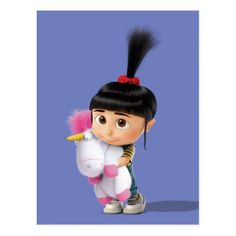

Agnes Gru is one of Gru and Lucy's three adopted daughters, alongside her big sisters Margo and Edith. She is the youngest child of the three sisters. She greatly adores unicorns, as shown on various occasions. She appears in all four Despicable Me films and several of the mini movies.
Agnes is a little girl with dark brown eyes. Her long black hair is tied in an upwards ponytail with a bright red scrunchie. Most of the time, Agnes wears steel blue overalls over a yellow and brown striped t-shirt, and white sneakers with yellow socks. She also wears a white ballet outfit like Edith and Margo (at the ballet recital). For pajamas, Agnes wears a long blue nightshirt covered with teddy bears and polar bear slippers; her hair stays the same. On her birthday, Agnes is wearing a dress that resembles a princess riding a unicorn. The colors are similar to her regular outfit. She also wears a blue princess hat on her head.
Agnes, like her sisters, wished to be adopted by someone who cared about her. At first, Agnes is only one out of the three sisters to be excited to be adopted by Gru. She happily hugs his leg and plays games with him, while her sisters are gawking at Gru, their dream of the 'perfect parents' in tatters. She is unaware of Gru's own dislike of the whole adoption, her innocence prevailing. She is a very naive, sweet, and innocent child, which is why Margo is so protective of her. She thinks Gru's "dog" is cute and chases after him, despite some protest from Margo.